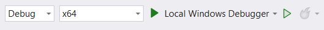

I am in the process of writing a plugin for Notepad++ to perform some biological operations. As I am not familiar with C++ and other compiled languages, I am taking some notes here about the process.
Note, another approach that I haven’t tried but might be of interest to anyone reading this: there is a PythonScript plugin that may allow to do all of this in a much easier way.
Motivation: Notepad++ for DNA sequences
The plugin provides a few functions to work with biological sequences, namely taking the reverse-complement of a DNA string, getting its protein translation, and finding the next ORF. Of course such functions are already available in plenty of specialized software (e.g. ApE or Benchling), so why add it to a unrelated application?
I use dedicated DNA software regularly, but it tends to be quite rigid, accepting only DNA characters, no space, little formatting… which is a good thing, as it makes it safer and avoid typos. But sometimes I need more of a sketchpad, pasting fragments of DNA in different frames, along with bits of translations. Maybe looking at some sequence in different frames. Maybe looking at a BAM file and trying to find a barcode and UMI. In these cases, I’ve found Notepad++ very useful, in particular it has this great feature that, if I select a sequence, it will highlight all identical sequences (more flexible than the search function of ApE or Benchling). But it is slightly annoying to switch between windows whenever I want to check if a string is present in revcomp etc.
Tooling
To develop a plugin, the first step is to go to the corresponding page in the Notepad++ documentation.
There, you will find promises to develop your first plugin in less than 10 minutes, and that “Even your grandmom can do it!”, I believe this is true, assuming your grandmom is familiar with C++ and the Win32 API.
So let’s see how this works. First you need to work in a compiled language, that is able to use existing header files and produce a DLL. If your favorite language doesn’t do that, or if you have no idea what any of this means, I suggest to use with the classic C++.
You will need a development environment for C++, in particular a compiler and Windows header files. The easiest is to look up Microsoft Visual Studio, and download the (free) Community Edition. Careful, the naming is confusing: you don’t want “Visual Studio Code”, which is a different program. From the website, you can only download an installer, and from there you can download the full Community edition (note that it is several GB). In addition, you will want to download the C++ bundle which contains important build tools.
Separately, you can open the plugin development section of the Notepad++ user manual, and download the plugin template source code.
Editing the plugin template
Once Visual Studio is fully installed, we start open our project. Make a copy of the plugin template with the appropriate name and path. This contains two subdirectories, src, for your source code, and vs.proj, containing information for Visual Studio. In particular, the file vs.proj/NppPluginTemplate.vcxproj can be opened in Visual Studio.
The files to edit are in src. Two files need to be edited:
PluginDefinition.cppis where you define your actual plugin functionsPluginDefinition.his where you declare the functionsNppPluginDemo.rcdeclares some general information (e.g. plugin name and version)
As far as I can tell, you won’t need to edit any other file in there. I added a README.md and a LICENSE for Github. If you download the plugin demo you can see how they added a resource folder and resource.h file.
Compiling the plugin
Before going any further, we might want to check our configuration. Download the plugin demo and open it in Visual Studio. In the toolbar on top of the screen, you should see a menu such as this one:

The first field is to select the type of compilation: while developing, “Debug” gives you more information about the errors and log messages. When you have a satisfying version of your code, select “Release” to compile an optimized program, that gives less information about what’s happening.
The second menu is the architecture to compile for. It needs to match the version of Notepad++ installed: if you have the 32 bits version, compile “x86”, if you have the 64 bits, compile as “x86”. On a final version, you may want to compile for both architectures and make the binaries available on Github.
Finally, the “Play” symbol starts the compilation. Click it having selected the appropriate parameters. If everything goes well, you will get an error message along the lines of:
Unable to start ‘C:\path\to\PluginDemo.dll’.
C:\path\to\PluginDemo.dll is not a valid Win32 application.
Indeed, our plugin is not expected to be a valid standalone application, it’s just a dll that can be loaded by another application (Notepad++).
Open the directory of your plugin, in vs.proj a new subdirectory has been created, containing the newly compiled binary.
All that’s left to do is to install this plugin by copy/pasting it in the appropriate directory. Don’t forget to close Notepad++ before pasting. Then, when you re-open Notepad++, your new plugin should have appeared in the “Plugins” menu.
Preparing to write a first function
Now let’s start to work on a real plugin. As indicated in the manual, we start by opening PluginDefinition.h. We define the plugin name:
//-------------------------------------//
//-- STEP 1. DEFINE YOUR PLUGIN NAME --//
//-------------------------------------//
// Here define your plugin name
//
const TCHAR NPP_PLUGIN_NAME[] = TEXT("Biotools for NPP");And we define the number of functions, let’s start with just one:
//-----------------------------------------------//
//-- STEP 2. DEFINE YOUR PLUGIN COMMAND NUMBER --//
//-----------------------------------------------//
//
// Here define the number of your plugin commands
//
const int nbFunc = 1;A bit below that, we need to indicate the name of the functions:
//
// Your plugin command functions
//
void revcomp();Now we can switch to the file PluginDefinition.cpp.
//--------------------------------------------//
//-- STEP 3. CUSTOMIZE YOUR PLUGIN COMMANDS --//
//--------------------------------------------//
// with function :
// setCommand(int index, // zero based number to indicate the order of command
// TCHAR *commandName, // the command name that you want to see in plugin menu
// PFUNCPLUGINCMD functionPointer, // the symbol of function (function pointer) associated with this command. The body should be defined below. See Step 4.
// ShortcutKey *shortcut, // optional. Define a shortcut to trigger this command
// bool check0nInit // optional. Make this menu item be checked visually
// );
setCommand(0, TEXT("Reverse-Complement"), revcomp, NULL, false);The first command has an index of 0, and will call the function revcomp(). Note that this only compiles if revcomp() has been declared in the header file (PluginDefinition.h), otherwise the compiler won’t know this is a correct function name.
And we arrive at this part, where we can finally start writing our actual functions:
//----------------------------------------------//
//-- STEP 4. DEFINE YOUR ASSOCIATED FUNCTIONS --//
//----------------------------------------------//The Notepad++ and Scintilla APIs
Now things get a bit more specific. To interact with Notepad++, you can use the API calls listed here. However, the main editor window is actually not directly controlled by Notepad++, it’s piloted by Scintilla, so you can interact with it using the API calls listed there.
Finally, as indicated in the Notepad++ documentation, these calls have to be made using Window’s SendMessage API, and will have the form:
LRESULT SendMessage(
[in] HWND hWnd,
[in] UINT Msg,
[in] WPARAM wParam,
[in] LPARAM lParam
);where hWnd is a handle to the Notepad++ or Scintilla program we are sending the message to, Msg is the name of the command to execute (fron the documentations linked above), and wParam and lParam and parameters explained by the documentation.
Let’s make a concrete example. For my function revcomp(), I expect the user to select a text and call the plugin. The plugin needs to get the selected text, do some processing, and replace it with a modified text. So how do we get the selected text? As this is happening inside the editor window, we look at the Scintilla API, and find SCI_GETSELTEXT:
SCI_GETSELTEXT(
, char *text NUL-terminated) → position This copies the currently selected text and a terminating NUL(0) byte to the text buffer. The buffer size should be determined by calling with a NULL pointer for the text argument: 1 + SCI_GETSELTEXT(0, NULL). This allows for rectangular and discontiguous selections as well as simple selections. See Multiple Selection for information on how multiple and rectangular selections and virtual space are copied.
So, we need to write
SendMessage(scintillaHandle, SCI_GETSELTEXT, whatever, ptr)where whatever will be ignored, and ptr is a pointer to a buffer in which the selected text will be written.
Here we have an additional difficulty: we need to initialize this buffer, and it needs to be long enough. So, as indicated in the doc, we will call this function twice, first using “a NULL pointer for the text argument”, and a second time with an appropriate pre-initialized buffer.
We can thus write this function:
std::string getSelectedText(HWND scintillaHandle)
{
std::string selectedText;
// Determine the buffer size needed for the selected text
LPARAM length = ::SendMessage(scintillaHandle, SCI_GETSELTEXT, 0, (LPARAM)nullptr);
if (length > 0)
{
char* buffer = new char[length + 1];
buffer[0] = '\0'; // Ensure the buffer is null-terminated
// Retrieve the selected text
::SendMessage(scintillaHandle, SCI_GETSELTEXT, 0, (LPARAM)buffer);
selectedText = buffer;
delete[] buffer;
}
else {
selectedText = "";
}
return selectedText;
}Some notes. First, I call ::SendMessage() to indicate that this is a function in the global namespace, and it doesn’t get overwritten. This appears to be the accepted good practice in this context.
As the first parameter of SCI_GETSELTEXT (the wParam) is ignored, I use 0 here.
When determining the buffer size, I can use the nullptr that already exists in C++ to define a NULL pointer. I will cast it into an LPARAM to make sure the type checker doesn’t complain.
One part that this function doesn’t address is the scintillaHandle. How can I call this function? For this, we must turn to the Notepad++ interface, where we find NPPM_GETCURRENTSCINTILLA:
[2028] NPPM_GETCURRENTSCINTILLA
Retrieves the current Scintilla view
Parameters:
wParam [in] int, must be zero. lParam [out]
int * currentEdit, pointer to the buffer receiving the current view. The returned value can be one of the following: Value Meaning 0 The main view 1 The second view -1 In case of an errorReturn value:
Returns always True
So we got it, we need to call:
::SendMessage(nppData._nppHandle, NPPM_GETCURRENTSCINTILLA, 0, (LPARAM)&which);Where the nppData._nppHandle is defined by Notepad++ and contain its handle, wParam = 0 as indicated by the documentation, and we give a pointer to which to store the Scintilla handle. To check for error, we can initialize which to a meaningless value, and select the handle based on the value of which:
int which = -1;
::SendMessage(nppData._nppHandle, NPPM_GETCURRENTSCINTILLA, 0, (LPARAM)&which);
if (which == -1)
return ;
HWND scintillaHandle = (which == 0) ? nppData._scintillaMainHandle : nppData._scintillaSecondHandle;
std::string selection = getSelectedText(scintillaHandle);Runtime debugging
There are three types of bugs: those that are detected directly by Visual Studio (typically syntax errors), and that appear underlined in red; those that are caught during compilation; and finally bugs that only manifest at runtime.
To help debug this last category, you can output some debugging information (the so-called print-based debugging). One way is to insert the information as text in the editor window (e.g. using SCI_REPLACESEL), or open a dialog box. The more “correct” way is to use debugging messages with OutputDebugString(). The problem now is, we have a dll, so Visual Studio can not directly run our code.
The solution is to first open Notepad++ with the plugin loaded, then in Visual Studio, use the menu Debug>Attach to Process, and attach the running Notepad++. You can now interact with the open Window, and any debugging messages are printed in Visual Studio.
Additional remarks
First, as I am not experienced with C++ you should probably not trust me.
When closing Visual Studio, you get offered to save a “.sln” file, you can say yes, it saves the state of the program (e.g. currently open documents).
The best way to figure out how to do something is to look on Github or Sourceforge at other plugins.
To create a new function, you need to edit 4 places, in the header file (number of functions, signature of your new function) and the cpp file (in the menu, and to write the actual function).
Conclusions
My (badly written) plugin can be found on Github. Writing C++ code was an interesting (though confusing) experience, I would need a lot more practice to write anything close to good quality code.
As the plugin has reached a level of functionality that is good enough for my needs, I don’t intend to work more on it; however there could be useful improvements, for example to accept whitespace in the input (and either keep it as-is for the reverse-complement and next ORF, or remove it if inside a codon for translation).